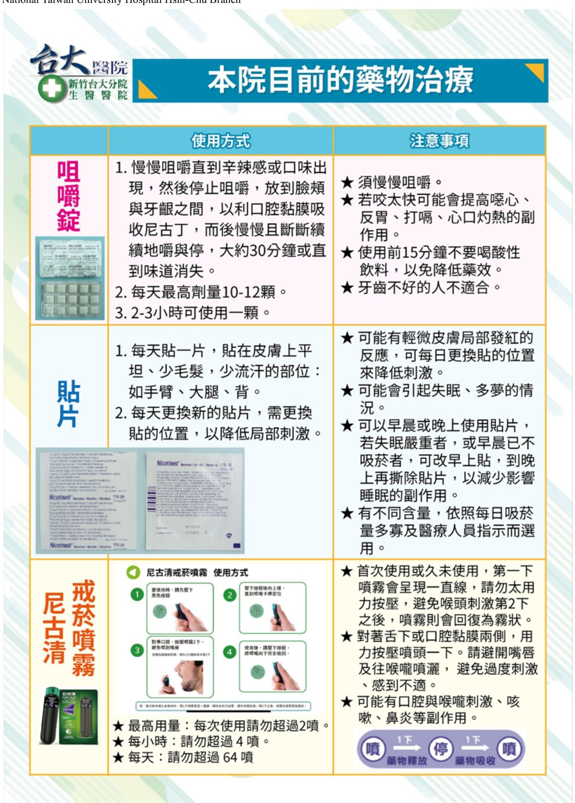
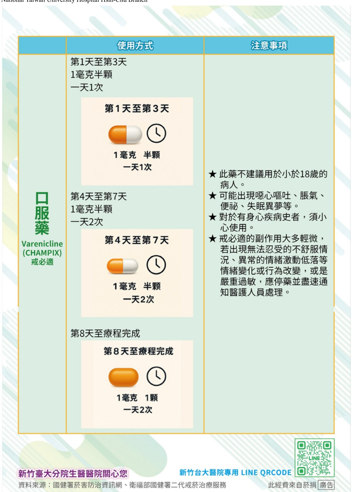

戒菸與健康生活
吸菸會加速血管硬化、升高血壓與心跳，是心血管疾病惡化的重要危險因子。對心衰竭患者而言，戒菸是保護心臟最有效、且立即見效的一步。
戒菸，專業協助成功率更高
研究調查顯示，吸菸者有 70% 曾嘗試戒菸，但未經專業協助時，短期戒菸成功率不到 10%。搭配專業輔導與正確使用輔助藥物，能大幅提高成功率：戒菸成功率方式 成功率 靠意志力 3–5% 戒菸諮詢 24.4% 戒菸藥物 25.2% 藥物＋諮詢 27.6%
S.T.A.R. 戒菸明星計畫
規劃戒菸時，可依循 S.T.A.R. 四步驟，提高成功機率：
- S（Set）慎重設定戒菸日
- 選定一個準備好的日子作為「戒菸日」，有明確目標才能更好地準備與執行，最好在 2 週內。
- T（Tell）公開決心
- 告訴家人、朋友和同事，爭取他們的支持與鼓勵，也讓自己更有責任感。
- A（Anticipate）預期困難
- 想一想哪些時候會讓你想抽菸，提前準備好替代行為或因應策略。
- R（Remove）清除誘因
- 清除所有香菸、打火機、菸灰缸等誘因，讓環境支持戒菸計畫。
本院戒菸資源
本院備有「戒菸教戰手冊」，歡迎索取。戒菸門診掛號費全免、藥物免費，歡迎戒菸！
台大新竹醫院戒菸專線 (03) 5326151 轉 523551 或 523734。
本院目前的戒菸治療方法
本院提供多種戒菸輔助藥物，包含尼古丁咀嚼錠、尼古丁貼片、尼古清噴霧，以及口服藥 Varenicline（戒必適），請與戒菸個管師或醫師討論，選擇最適合的方式。

